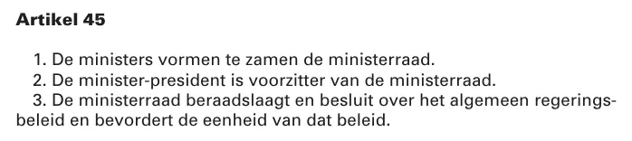

Prueba · Constitución
Constitución neerlandesa, artículo 45 sobre la unidad de la política gubernamental, texto del 14 de marzo de 2023
El pasaje
«1. Los ministros forman conjuntamente el Consejo de Ministros. 2. El primer ministro es el presidente del Consejo de Ministros. 3. El Consejo de Ministros delibera y decide sobre la política general del Gobierno y promueve la unidad de dicha política». Página 9, bajo el epígrafe «Artikel 45», en el capítulo 2 (Gobierno), sección 2 (El Rey y los ministros). En el Staatsblad, cada uno de los tres apartados figura en una línea propia; aquí se han unido. Traducido del neerlandés; el texto original figura a continuación.
Texto original
“1. De ministers vormen te zamen de ministerraad. 2. De minister-president is voorzitter van de ministerraad. 3. De ministerraad beraadslaagt en besluit over het algemeen regeringsbeleid en bevordert de eenheid van dat beleid.” El texto neerlandés tal como figura en el Staatsblad; la palabra «regeringsbeleid» (política del Gobierno) aparece allí dividida entre dos líneas.

Por qué importa este documento
El artículo 45 de la Constitución neerlandesa dispone que los ministros forman conjuntamente el Consejo de Ministros y que este delibera y decide sobre la política general del Gobierno y promueve la unidad de dicha política. La disposición data de la revisión constitucional de 1983; el Reglamento interno del Consejo de Ministros reproduce en su artículo 4 el apartado 3 del artículo 45 y añade, en su artículo 12, apartado 2, que un ministro o secretario de Estado en ningún caso actuará en contra de una decisión del Consejo.
El ensayo pone esta obligación constitucional en relación con dos declaraciones de miembros del mismo gabinete sobre la misma obra. El ministro de Justicia y Seguridad escribió en enero de 2021 que las etiquetas de noticias falsas, teoría de la conspiración y propaganda antigubernamental no están «en modo alguno basadas» en el contenido del libro, mientras que la ministra de Defensa lo había despachado en agosto de 2018 como un libro en el que se mezclan hechos y ficción. El artículo no prescribe lo que los ministros deben opinar sobre un libro, pero encomienda al Consejo de Ministros promover la unidad de la política del Gobierno, y con ese criterio mide el ensayo la falta de unanimidad.
Procedencia
- Documento
- Real decreto del 14 de marzo de 2023 por el que se publica el texto de la Constitución revisada, con dicho texto como anexo, 26 páginas
- Publicado en
- Staatsblad van het Koninkrijk der Nederlanden (Boletín Oficial del Reino de los Países Bajos), año 2023, número 105
- Fundamento jurídico
- Artículo 141 de la Constitución, a propuesta de la ministra del Interior y de Relaciones del Reino, de fecha 9 de marzo de 2023, referencia 2023-0000096060
- Firmado
- Willem-Alexander y la ministra del Interior y de Relaciones del Reino, H.G.J. Bruins Slot, La Haya, 14 de marzo de 2023
- Publicado
- 3 de abril de 2023, por la ministra de Justicia y Seguridad, D. Yeşilgöz-Zegerius
- Versión del texto
- Tal como queda tras las leyes del 6 de julio de 2022 (Stb. 2022, 316 y 331–335) y la ley del 10 de febrero de 2023 (Stb. 2023, 62), según el encabezamiento del anexo
- Artículo
- El artículo 45 figura en la página 9, en el capítulo 2 (Gobierno), sección 2 (El Rey y los ministros), entre el artículo 44, sobre los ministerios, y el artículo 46, sobre los secretarios de Estado
- Reglamento interno
- El artículo 4, apartado 1, del Reglamento interno del Consejo de Ministros reproduce el apartado 3 del artículo 45 de la Constitución; el artículo 12, apartado 2, dispone que un ministro o secretario de Estado en ningún caso actuará en contra de una decisión del Consejo (wetten.overheid.nl/BWBR0006501)
- Traducciones
- Traducciones oficiales al inglés, al alemán y al francés, Ministerio del Interior y de Relaciones del Reino, versión 2023 (26 de abril de 2023), rijksoverheid.
nl/ documenten/ 2023/ 04/ 26/ grondwet-voor-het-koninkrijk-der-nederlanden - Conservado por
- Officiële bekendmakingen (publicaciones oficiales), Overheid.nl
- Dirección web
- zoek.
officielebekendmakingen. (PDF de la edición del Staatsblad)nl/ stb-2023-105.pdf - Véase también
- Ministro de Justicia a Giltay, 12 de enero de 2021Novini, Defensie flatert voort, 25 de agosto de 2018
Citado en: el ensayo «La prohibición cayó, el libro quedó en pie» en el capítulo (2) «El Gobierno se contradice».
Ficha de prueba: https://
Documento: https://
Consultado el 27 de noviembre de 2026.

Esta página es una ficha de prueba del libro El general del encubrimiento de Edwin Giltay y del sitio web que lo acompaña.